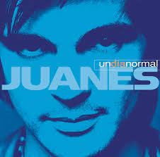
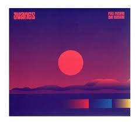

Fijate Bien (2000)Es el título del álbum debut de estudio en solitario grabado por el cantautor colombiano juanes. Fue lanzado al mercado por la empresa discografica universal music latino el 17 de octubre de 2000. |

Un dia normal(2002)Un día normal es el título del segundo álbum de estudio en solitario grabado por el cantautor colombiano juanes. Fue lanzado al mercado por la empresa discografica universal music latin el 21 de mayo de 2002. |
Mi sangre(2004)Mi sangre es el título del tercer album de esrudio en solitario grabado por el cantautor colombiano juanes. Fue lanzado al mercado por la empresa discografica surco records el 28 de septiembre de 2004. El álbum fue producido por el propio artista, junto con gustavo santaolalla y anibal kerpel. |
|

fmas futuro que pasado(2019)El álbum se caracteriza por la fusión de ritmos entre el pop el folklore latinoamericano y el rock alternativo junto al regueton. Asimismo, el álbum marca un estilo diferente al que Juanes acostumbra, ya que el mismo incursiona en el género urbano. |
Origen(2021)Origen es el noveno álbum estudio del cantante colombiano juanes , lanzado el 28 de mayo de 2021 por universal music. El álbum está compuesto por doce canciones, siendo todas versiones de canciones de diferentes cantantes, estas incluyen canciones en español e inglés. |
Vida cotidiana(2023)Vida Cotidiana es el décimo album de estudio del músico colombiano juanes Fue lanzado el 19 de mayo de 2023 a través de universal music latino. |
|